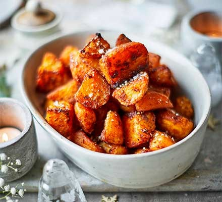

PAPRIKA POTATOES

Description
This sweet and spicy potatoes recipe is a fan favorite. The perfect side dish for every meal, these flavour-full potatoes
always hit the spot. Be cautious though - they might not be a great fit if you don't handle spicy food well.
Note that this recipe does not have any measurement, you will have to choose your amounts by what looks right.
Ingredients
- potatoes
- olive oil
- coarse salt
- sweet paprika
- spicy paprika
Steps
- Pre-heat oven to 200 degrees Celsius.
- Peel your potatoes and cut them in to small cubes, then place them in a pile on a baking sheet.
- Add all the spices by the amounts you see fit.
- Mix the spices into the potatoes and spread them on the tray.
- Bake for 45-60 minutes, and make sure to mix and flip them about half-way through.